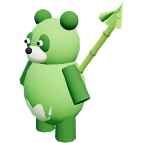
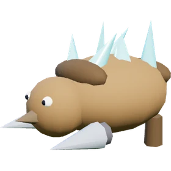
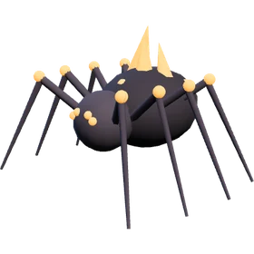
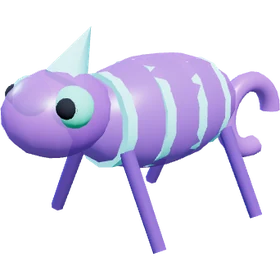
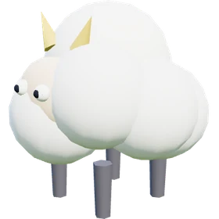
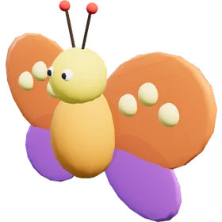
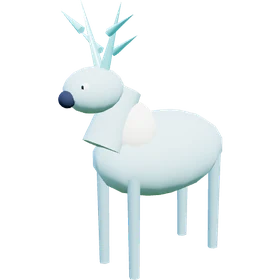
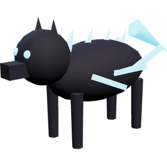
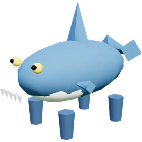
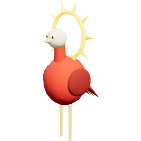

Dziesięć gatunków popali. Osłab stworzenie, rzuć kulę — i stanie się twoim pomocnikiem w walce albo pracownikiem w bazie.

Bambuzel
🌿 TrawaDobroduszna panda z bambusową włócznią.
- 🪓 Rąbie drzewa
- 🫐 Zbiera jagody i grzyby

Grumrok
💎 ZiemiaOpancerzony kopacz z kryształami na grzbiecie.
- ⛏️ Wydobywa kamień
- 📦 Nosi ładunki

Ignis Wywerna
🔥 OgieńOgnisty pająk. Atakuje pierwszy, więc uważaj na zdrowie.
- 🔩 Wytapia rudę w hucie
- 🍳 Gotuje na ognisku kuchennym

Mirażbr
👻 CiemnośćPółprzezroczysty kameleon, łapie się go łatwiej niż innych.
- 📦 Najlepszy tragarz: karmi brygadę

Puszkłębek
⚪ NeutralnyOwieczka-chmurka ze złotymi różkami.
- 🫐 Zbiera jagody i grzyby
- 📦 Nosi ładunki

Krylosza
🌪️ PowietrzeMotyl-wróżka z czterema skrzydłami.
- 🫐 Najlepszy zbieracz plonów

Mrozoróg
❄️ Woda i lódLodowy jeleń z kryształowymi rogami.

Burzownik
⚡ Ciemność i powietrzeCzarny wilk z neonowymi błyskawicami. Atakuje pierwszy.
- 📦 Nosi ładunki
- 🪓 Rąbie drzewa

Falozęb
💧 WodaLądowy rekin na łapkach.

Słońcodziób
☀️ Ogień i powietrzeWysoki ptak ze słoneczną koroną za głową.
- 🔩 Wytapia rudę w hucie
- 🍳 Gotuje
- 📦 Nosi